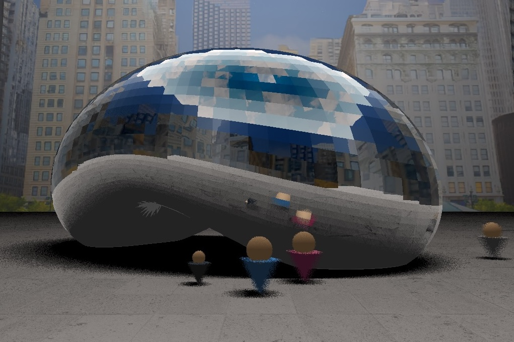

A Raytracing Project
For my final project in Introduction to Computer Graphics, three of my classmates and I decided to raytrace the Chicago Bean. Raytracing is a rendering method that shoots rays out of the camera toward a scene and follows those rays as they bounce off shiny objects and interact with lights. We had already built our own raytracers for earlier projects in the course and were looking to build on that base.
We decided to raytrace the Chicago Bean because it was a significant increase in complexity from our raytracer. First, the shape of the Bean was something we hadn't encountered before, so we implemented an .obj loader and imported complex meshes to be raytraced. We also had to create a complex scene made of buildings and people to show in the reflection. On top of this, we implemented an acceleration structure, camera movement, occlusion, and motion blur.
We built the project around the raytracer I had coded for previous projects in the class.
I implemented a BVH, or Bounding Volume Hierarchy, to speed up the raytracing process. This creates a box around all the objects in the scene to raytrace against, since a cube is much quicker to raytrace than a sphere, cone, etc. because its implicit equation is just six planes. Since we were raytracing such a complex scene, this reduced the rendering time significantly, letting us run and test much faster.

The second feature I implemented was camera movement. This involved incrementally changing both the camera's position vector and look vector to rotate around the Bean. To render a full circle, I experimented with 120, 180, 240, and 360 frames to test how many were needed to create the illusion of smooth movement.
Incrementally changing the position and look of the camera involved using trig to figure out how to move the camera around a circle without hardcoding the values or angle. I enjoyed testing the camera movement on existing scenes.
I really enjoyed this project. I deepened my understanding of raytracing and learned how just a few small tweaks can make a raytracer much more realistic. I'm extremely proud of the result my team was able to produce.
Raytracing the Bean at full complexity took up to twenty minutes per frame, so to generate the 180 frames we wanted for a full circle, each two degrees apart, we had to cut down on the Bean's complexity.
In the future, I'd love to start rendering earlier so we can produce all the frames at the high complexity seen in the opening image, or research other acceleration structures to cut down on rendering time even further.
The result is a fully raytraced 360° render of the Chicago Bean, reflecting the buildings and people in its surrounding city scene.
The final 360° render of the raytraced Bean